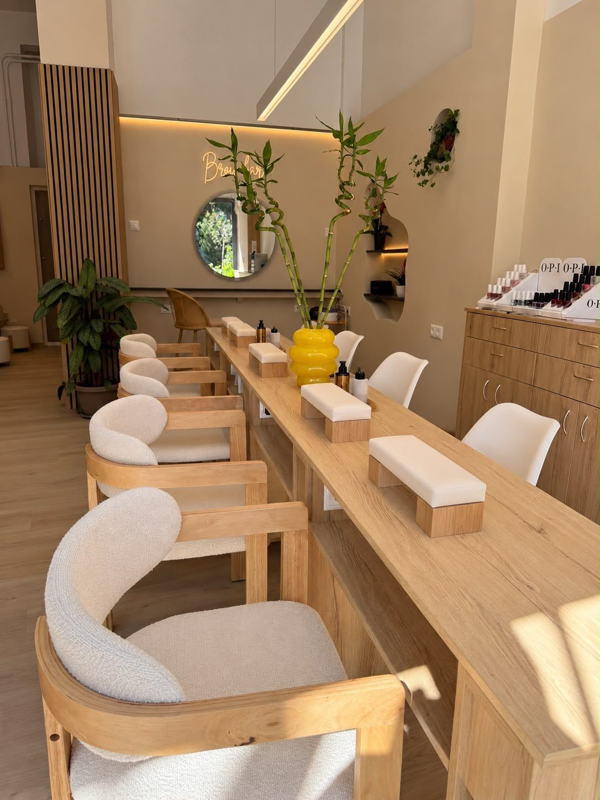
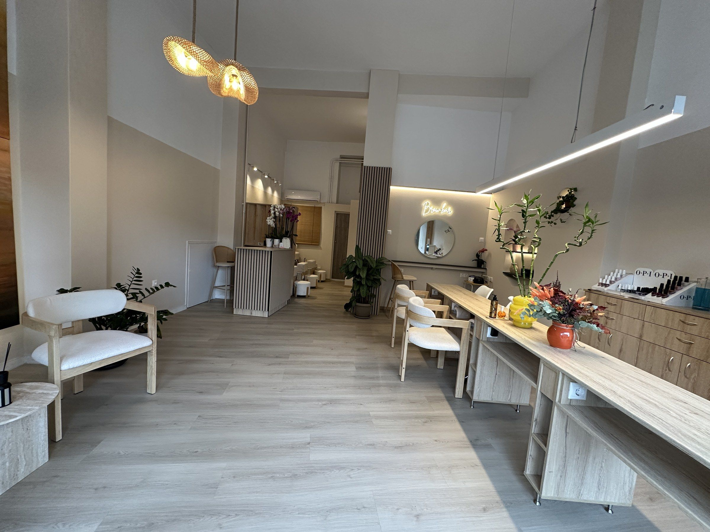
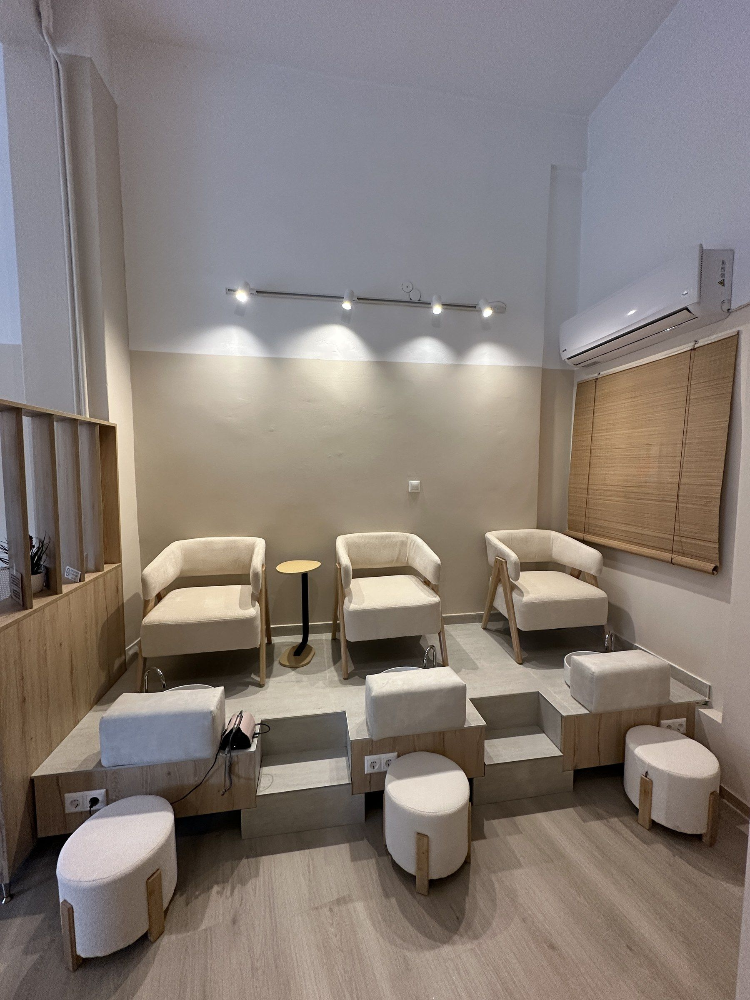
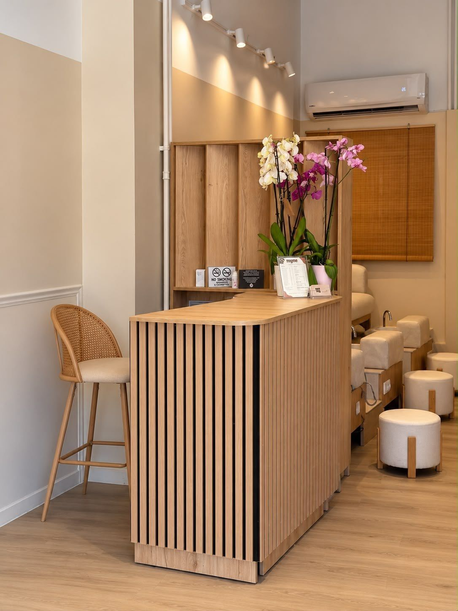

Nails
Beautiful nails begin with the right care. We look at your natural nails first, then choose the treatment together.
Manicures from €15. Nail services
Discover a personalised beauty experience where expert care, attention to detail and thoughtful treatments bring out your natural beauty.

A place that listens before it cares for you.
MYNE Nails & Brows is a personalised nail, brow and lash beauty studio located at Kallirrois 74, Koukaki, Athens, Greece. MYNE focuses on individualised nail care, professional brow mapping and personalised beauty treatments, with attention to cleanliness, detail and customer care.
We don't believe beauty should change who you are. Every face has its own proportions, every eye its own expression, every nail its own needs. So we never start from a ready-made answer. We start with you.

Beautiful nails begin with the right care. We look at your natural nails first, then choose the treatment together.
Manicures from €15. Nail services
Brows designed for your face. With brow mapping, we study your proportions before we shape.
Brow shaping €15. How we design brows
Bring out the natural beauty of your eyes, with a lash lift and tint on your own lashes.
Lash lift €35. Lash services
Make-up and brow and lash combinations are on the price list.
We listen, understand and recommend. No two people get the same answer by default.
Careful technique shows in the result, and in how long it lasts.
Cleanliness and care are the basis of every visit. Pending: two specific hygiene practices, as Eva describes them

Eva is the brow artist and owner of MYNE. Pending: two sentences about Eva from her interview, approved by her
I don't draw the same brows on every face. Every face has its own balance. My job is to find it.
MYNE is in Koukaki, the neighbourhood beside the Acropolis area. Booking takes a minute online, and you choose the day and time yourself. Pending: confirm that service is available in English, and the walking distance from the Acropolis Museum
Bright, calm, and made to feel comfortable from the first minute.



Pending: 2–3 genuine review quotes with first name and source, with the owner's permission. Section hidden until then.
MYNE Nails & Brows is a nail, brow and lash studio in Koukaki, Athens. Every treatment is adapted to the person: we listen to what you need first, then recommend.
At Kallirrois 74, 11741 Athens, in Koukaki. Directions and contact details.
Manicures and pedicures, semi-permanent polish, gel and acrygel, brow shaping and tinting, brow lamination, lash lifts and lash tinting, and make-up. Every service is listed with its price and duration on the price list.
Online through the booking system, at any hour. You can also call +30 210 923 6859 or send a WhatsApp message.
Pending: opening hours. To be confirmed: Tuesday–Friday 10:00–20:00, Saturday 10:00–18:00, closed Sunday and Monday
Brow mapping is designing your brows from the proportions of your own face. Instead of following a template, we measure and draw the shape that suits your features. Read more.
Kallirrois 74, 11741 Athens, Greece
Telephone: +30 210 923 6859
Not sure what you need? Send us a message and we'll find the right treatment together.